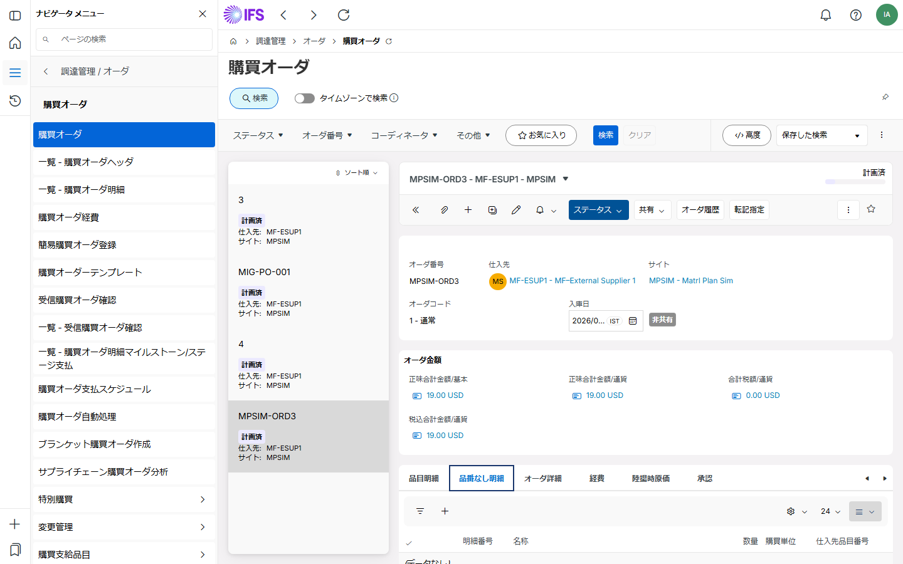

15
Step 15 of 15 — TPPO
No-Number 品目の説明テキスト入力
Text Processing, Purchase Order
概要
No-Number 品目を発注する場合、Description 列に品目の説明を入力することが必要です。テキスト処理機能で説明のグループを指定できます。
使用画面：Purchase Order / Form

🔌 API 詳細
GETPurchaseOrderHandling/PurchaseOrderSet('{OrderNo}')?$select=OrderNo,VendorNo,OrderStatus — 発注完了後の確認
| フィールド | 型 / 値 | 説明 |
|---|---|---|
| OrderStatus | Planned | このステップ完了時のステータス |
| AuthorizeCode | string | 承認キューの責任者コード |